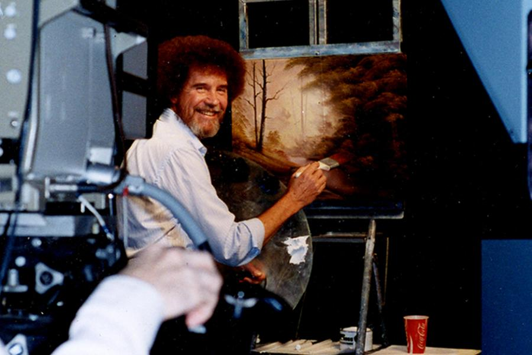

Bob Ross: The Man Behind The Happy Little Trees
In the early 1980s, Bob Ross quietly appeared on public television stations across the United States to give viewers an experience that was part art lesson, part entertainment, and part pro bono therapy session.
In more than 400 26-minute episodes, Ross taught his painting technique to millions of viewers, most of whom weren’t especially interested in learning to paint for themselves, but who were mesmerized by Ross’s hypnotic smoothness and trademark permed afro.
In something close to real-time, he effortlessly daubed whole landscapes into existence on the canvas, talking the whole time about soothing topics and encouraging his novice viewers to discover their own inner artists. Even those in his audience who never picked up a brush still found the show oddly calming, and many reacted with real grief when their icon unexpectedly died of cancer in 1995.
Despite his consistently high ratings and devoted fan base, however, Bob Ross lived a very private life and rarely spoke about himself, and so there remains a lot that isn’t known about the man who coined the term happy little trees.
Feeling that his job In the Military ran against his natural temperament, he swore that if he ever left the military he’d never shout again. To lift some of the strain he was under, and to make a little extra money, Ross took up painting in his spare time.
The Joy Of Painting
The Joy of Painting aired for the first time on PBS in January 1983. In the first of what would be hundreds of episodes, Ross introduced himself, asserted that everyone has at some time wanted to paint something, and promised that you too can paint almighty pictures.
One of the things that made Ross’ show special, apart from his chill attitude, was that it grew out of his in-person art classes. Ross was fundamentally a teacher, and the point of his show was to encourage other people to learn to paint, so he always used the same pigments and brushes to make it easy for beginners on a budget to get started for very little money.
Every painting he did on the show was just the first of three nearly-identical copies; despite his unstudied air on the show, Ross painted one picture before the show that would be mounted out of sight to act as a reference during filming. The second was what the audience saw him paint, and the third was painted later and took much longer; this was the high-quality version to be photographed for his art books.
Ross seems not to have let his success go to his head. Throughout his rise, though he always took an active hand in telling Kowalski how he wanted his business run, he and his wife continued on in their suburban home and lived as private a life as they could.
In late spring 1994, Ross was unexpectedly diagnosed with late-stage lymphoma. The demands of his treatment forced him to step away from his show and the last episode aired on May 17. Just over one year later, on July 4, 1995, Bob Ross quietly died from his illness and was buried in New Smyrna Beach, Florida, near where he had lived as a child.